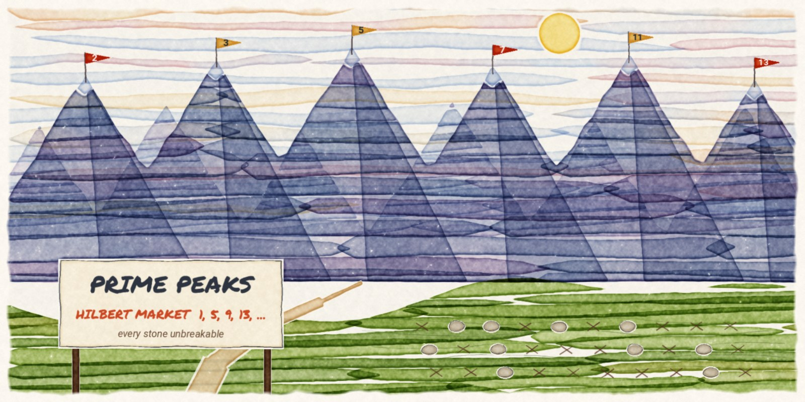

A ring of mountains where every stone is unbreakable, and a market in the clouds where one stone breaks two different ways.
The channels of the Delta end at a cliff path. Above it, six peaks, each with a flag: 2, 3, 5, 7, 11, 13. Below, terraced fields full of numbered plots, most of them crossed out.
Mateo: Who crossed out the fields?
El Gran Pesado (sitting on a boulder, cracking walnuts on his knee): Every number that breaks. Four is two twos. Six is a two and a three. Up here we only keep the stones that cannot be split. We call them primes, and every other number is built from them.
Kevin: Built in how many ways?
El Gran Pesado: One. Always one. That is the law of the mountain.
Lucía (pointing at a market on the highest terrace): Then what's that sign? "Hilbert Market: Book weights only." They sell 441 as 9 times 49 at one stall, and as 21 times 21 at the next.
El Gran Pesado (the walnut stops halfway to his mouth): …The Market is not the mountain.
Diego: And when the peaks run out? There's six flags.
Sofía: There's six flags we can see.
Find the next number nobody has crossed out. It is prime. Then cross out all its multiples. Repeat.
Sections marked Core are taught on both schedules. Semester sections are taught in class on the semester schedule and are reading on the quarter schedule. Optional code quests can replace Navigator problems on either schedule. On the quarter schedule, Lab notes, Paradox notes, puzzles, Studio corners, strategy questions and Navigator or Cartographer problems are extensions students choose.
Each session is 50 minutes. Both full schedules
A prime is a whole number greater than 1 whose only positive divisors are 1 and itself. A number greater than 1 that is not prime is composite. The number 1 is neither: it is the "empty" stone.
Pick a confidence for each card before you read on. Your choices stay in this browser only. Each card names the section that settles it.
Every integer n > 1 is divisible by some prime.
Proof. The set of divisors of n that are bigger than 1 is not empty (it contains n), so it has a smallest element q. If q were composite, q = ab with 1 < a < q, and a would divide n too: a smaller divisor bigger than 1. That is impossible, so q is prime.
There are infinitely many primes.
Proof. Take any finite list of primes p1, …, pk, and let N = p1p2⋯pk + 1. By Lemma 5.1, some prime q divides N. If q were on the list, it would divide both N and the product, so it would divide their difference, 1. No prime divides 1. So q is a prime missing from the list. No finite list holds every prime.
Careful: the proof does not say N is prime. 2·3·5·7·11·13 + 1 = 30031 = 59 · 509. It only says N's prime divisors are new.
A composite number n has a prime divisor p ≤ √n.
Proof. Write n = ab with 1 < a ≤ b. Then a² ≤ ab = n, so a ≤ √n. Any prime divisor of a (Lemma 5.1) divides n and is at most a.
So to sieve up to 120, you only need the primes 2, 3, 5 and 7: every composite up to 120 has one of them as a divisor. The same fact says the sieve can start crossing multiples of p at p²: smaller multiples kp have k < p, and a prime divisor of k already crossed them out.
Give each element a prime: H → 2, C → 3, O → 5, N → 7. (Mojadito chemists approve: oxygen 5, nitrogen 7, hydrogen even.) A molecule's formula number is the product of its atoms' primes: water H2O is 2²·5 = 20, methane CH4 is 3·2⁴ = 48, carbon dioxide is 3·5² = 75.
Now a balanced reaction has equal products on both sides. CH4 + 2 O2 → CO2 + 2 H2O becomes 48 · 25² = 30000 = 75 · 20².
Going back from 30000 to the atoms works only because a number breaks into primes in one way (Theorem 5.5). But the formula is not the molecule: ethanol and dimethyl ether are both C2H6O, formula number 2880, with their atoms joined in different ways.
Solution. √437 ≈ 20.9, so by Proposition 5.3 we only test the primes 2, 3, 5, 7, 11, 13, 17, 19. The last one works: 437 = 19 · 23. Composite.
Type an answer and press Check. A hint appears if it is not right yet.
In the Entrance Exam you broke the prophecy "if a | bc then a | b or a | c" (6 divides 4 · 9 but neither 4 nor 9). Here is its repair.
If a prime p divides ab, then p | a or p | b. More generally, if p divides a product of several numbers, it divides one of them.
Proof. Suppose p ∤ a. The only positive divisors of p are 1 and p, so gcd(p, a) = 1. By Euclid's lemma (Lemma 4.1, which came from Bézout), p | b. For several factors, use induction on how many there are.
Every integer n > 1 is a product of primes, and this product is unique apart from the order of the factors.
Existence. Strong induction. If n is prime, we are done. Otherwise n = ab with 1 < a, b < n; both are products of primes by the induction hypothesis, so n is too.
Uniqueness. Suppose some number has two different prime factorizations, and let n be the smallest such number: n = p1⋯pr = q1⋯qs. The prime p1 divides the product of the q's, so by Lemma 5.4 it divides some qj. Since qj is prime, p1 = qj. Cancel it from both sides: n/p1 is smaller than n and still has two different factorizations. That contradicts the choice of n.
The Hilbert Market only deals in Book weights, the numbers 1, 5, 9, 13, 17, 21, … that leave remainder 1 when divided by 4. A product of two Book weights is a Book weight again, so the Market can multiply. Call a Book weight a Book prime if it is bigger than 1 and is not a product of two smaller Book weights.
Then 9, 21 and 49 are all Book primes (3 and 7 are not Book weights), and
Two different breakings. Which step of the proof above fails? Existence still works: strong induction never leaves the Book. Uniqueness used Lemma 5.4, and in the Book it is false: 9 divides 21 · 21 but does not divide 21. Lemma 5.4 came from Bézout, and Bézout needs subtraction, which throws you out of the Book.
In the full integers, 441 = 3 · 3 · 7 · 7, one way only. The real atoms 3 and 7 leave remainder 3 mod 4, so the Market never sees them alone, only in pairs: 3·3 = 9, 3·7 = 21, 7·7 = 49. Pairing the same four atoms in two ways is exactly what gives two breakings.
Question. Factor 1960 and count its divisors.
Solution. 1960 = 2³ · 5 · 7². By Corollary 5.6 it has (3 + 1)(1 + 1)(2 + 1) = 24 divisors.
Question. Find gcd(360, 84) and lcm(360, 84).
Solution. 360 = 2³ · 3² · 5 and 84 = 2² · 3 · 7. Take the smaller power of each prime for the gcd, 2² · 3 = 12, and the larger power for the lcm, 2³ · 3² · 5 · 7 = 2520.
Type an answer and press Check. A hint appears if it is not right yet.
El Gran Pesado brings a Book weight to the Hilbert Market. Break it into Book primes: press a stone to see how it splits into two Book weights, and pick one. Stones that cannot split turn gold. When everything is gold, you have one breaking.
Then start over and find a different one. El Gran Pesado says how many breakings exist. Find them all to win the round.
Which Book primes are not real primes? Show they are exactly the products of two real primes that each leave remainder 3 mod 4. Then predict, without the duel, how many breakings 3 · 7 · 11 · 19 = 4389 has.
Breakings found this round:
Once you know the primes of n, you know all its divisors.
If n = p1e₁ ⋯ pkek, the positive divisors of n are the numbers p1f₁ ⋯ pkfk with 0 ≤ fi ≤ ei. So n has τ(n) = (e₁ + 1)⋯(ek + 1) divisors.
Proof. If d | n, then n = dm, and putting the factorizations of d and m together gives the factorization of n. By uniqueness, d uses only the primes of n, each at most as often. Conversely every such product divides n. Each exponent fi has ei + 1 choices.
The doors, settled for good. τ(n) is odd exactly when every ei is even, that is, when n is a perfect square. In the Hall of a Hundred Doors, door n is toggled τ(n) times, so it ends open exactly when n is a square.
A number is perfect if it equals the sum of its divisors smaller than itself: 6 = 1 + 2 + 3, and 28 = 1 + 2 + 4 + 7 + 14.
If q = 2k+1 − 1 is prime, then n = 2kq is perfect.
Proof. By Corollary 5.6 the divisors of n are 2i and 2iq for 0 ≤ i ≤ k. They add up to (1 + 2 + ⋯ + 2k)(1 + q) = (2k+1 − 1) · 2k+1 = q · 2k+1 = 2n. Taking away n itself leaves n.
Euler proved the converse: every even perfect number has this form. Primes 2p − 1 are called Mersenne primes. Whether an odd perfect number exists is one of the oldest open questions in mathematics.
Divisors:
Periodical cicadas in eastern North America come out of the ground all at once every 13 or 17 years. One hypothesis: a prime cycle rarely lines up with the shorter cycles of predators or other broods (when do a 17-year and a 3-year cycle meet? Chapter 2 knows). Biologists still debate how much this explains, so treat it as a question, not a fact.
Paint the primes of a world with i, where 5 = (2 + i)(2 − i) breaks but 3 does not. We return there in Chapter 10. Open the Studio
Write π(x) for the number of primes up to x (no relation to 3.14…). The sieve showed rows getting emptier. How much emptier?
As x grows, π(x) divided by x / ln x gets closer and closer to 1.
Roughly: near a big number x, about one number in ln x is prime. Near a million, ln x ≈ 13.8, so about one in 14. The proof needs complex analysis and came a century after Gauss guessed it (see Culture).
| x | π(x) | x / ln x |
|---|---|---|
| 100 | 25 | 22 |
| 1,000 | 168 | 145 |
| 10,000 | 1,229 | 1,086 |
| 100,000 | 9,592 | 8,686 |
The staircase is π(x), one step up at each prime. The smooth curve is x / ln x. Both keep growing, and their ratio drifts slowly toward 1.
Alexandria, about 300 BCE. Euclid's Elements, Book IX, proves that the primes outnumber any finite list (Proposition 20) and builds perfect numbers from primes of the form 2k+1 − 1 (Proposition 36).
Cyrene and Alexandria, 3rd century BCE. Eratosthenes, who also estimated the size of the Earth, is credited with the sieve. The method reaches us through Nicomachus of Gerasa, writing about 100 CE.
Baghdad, 9th century. Thābit ibn Qurra found a rule that builds amicable pairs, two numbers where each is the sum of the other's proper divisors, like 220 and 284.
Paris and Berlin, 1644 to 1849. Marin Mersenne listed exponents p that he claimed make 2p − 1 prime, with some mistakes. Leonhard Euler proved that every even perfect number comes from a Mersenne prime; the proof was published after his death.
Göttingen, 1792 to 1896. As a teenager, Carl Friedrich Gauss counted primes in tables and guessed the Prime Number Theorem. Jacques Hadamard and Charles de la Vallée Poussin proved it, independently, in 1896.
Today. As of November 2026, the largest known prime is 2136,279,841 − 1, with 41,024,320 digits. Luke Durant found it in October 2024 through GIMPS, a volunteer project that searches for Mersenne primes.
Deckhand problems are for everyone. Navigator and Cartographer problems are where you stretch.
Short answers for every Deckhand problem and hints for the Navigator problems open with a click. For unlimited drills with instant checking, use the Practice Deck.
These cells run real Python in your browser. The first run loads Python (about 10 MB, once). Edit anything and run again.
Where primes are used: hash tables, the gap between multiplying and factoring that protects the internet, and prime-year cicadas. Open the Field Station
El Gran Pesado pays for his walnuts with a single 441-coin. "Nine times forty-nine," says the merchant. "Twenty-one squared," says Kevin. El Gran Pesado shrugs: "On the mountain, three, three, seven, seven." Below the peaks, across the water, something is ticking: a sea full of clocks.